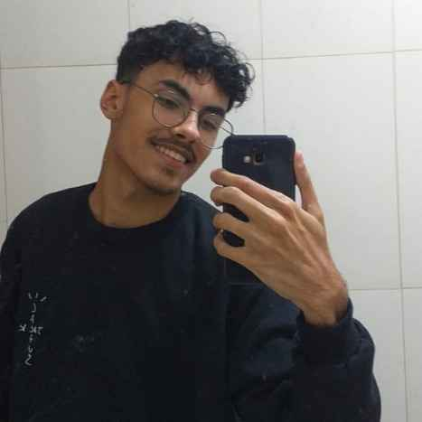

Bem-vindo ao meu portfólio!
Meu nome é Kaíque Marques Santos. Tenho 19 anos e estou trilhando minha jornada no universo da tecnologia e programação. Desde cedo, sou fascinado por como os sistemas funcionam e pela capacidade de criar soluções a partir do zero. Acredito que o código não é apenas uma sequência de comandos, mas uma ferramenta poderosa para resolver problemas e transformar a realidade. Minha paixão por tecnologia me levou a mergulhar de cabeça nesse mundo e buscar constantemente novos conhecimentos.
Meus Interesses e Hobbies
Quando não estou quebrando a cabeça com códigos, gosto de explorar outros universos. Sou um grande fã de música, especialmente de rock e alternativa, que me ajudam a relaxar e manter a mente criativa. Além disso, aprecio bastante o mundo dos jogos eletrônicos, tanto pela diversão quanto pela lógica e estratégia envolvidas, que muitas vezes se conectam com o raciocínio da programação.
- Ouvir música (Rock, Alternativa)
- Jogos eletrônicos (FPS, RPGs)
- Ler sobre novas tecnologias e tendências
- Aprender linguagens de programação (mesmo que por curiosidade)
Minha Visão para o Futuro
Atualmente, estou focado em aprender variadas áreas, buscando as melhores práticas e ferramentas do mercado para me aprofundar. Meu objetivo é me tornar um desenvolvedor full-stack, capaz de construir soluções robustas e impactantes. Estou sempre aberto a novos desafios e oportunidades que me permitam crescer e contribuir com projetos inovadores.